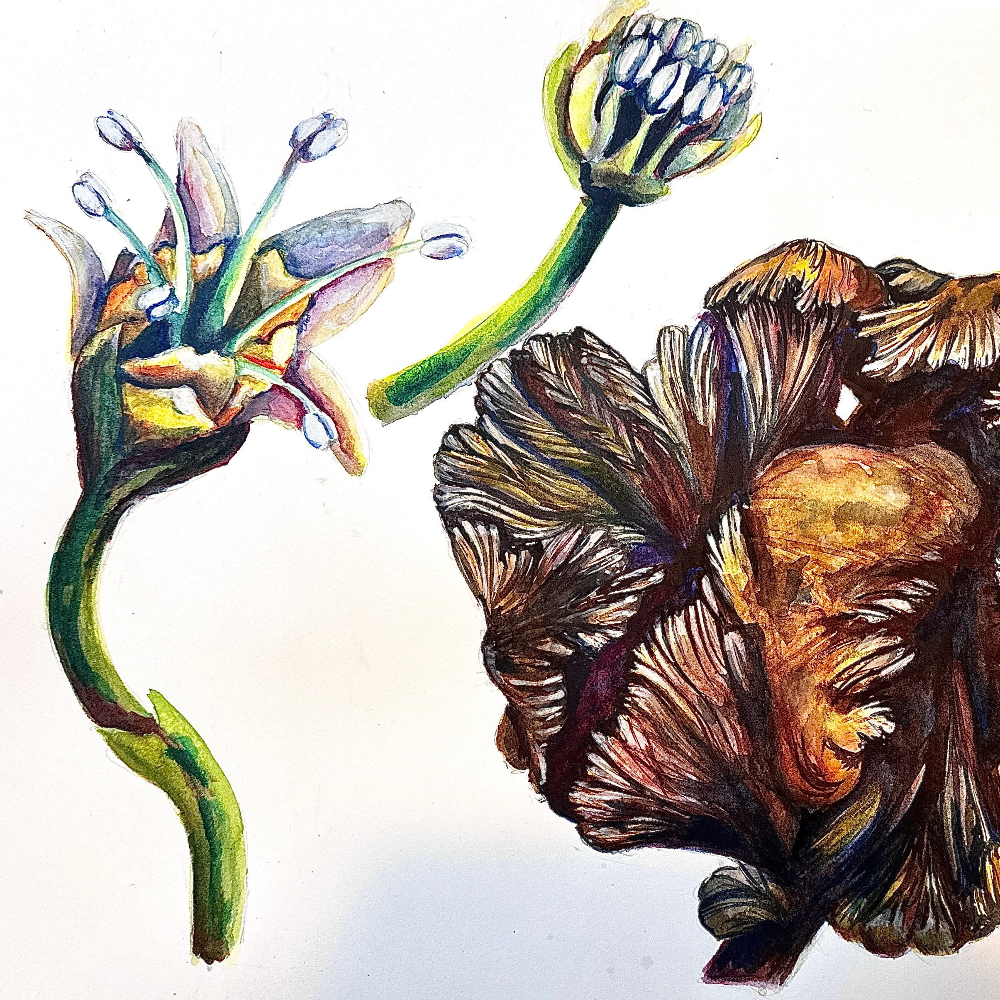
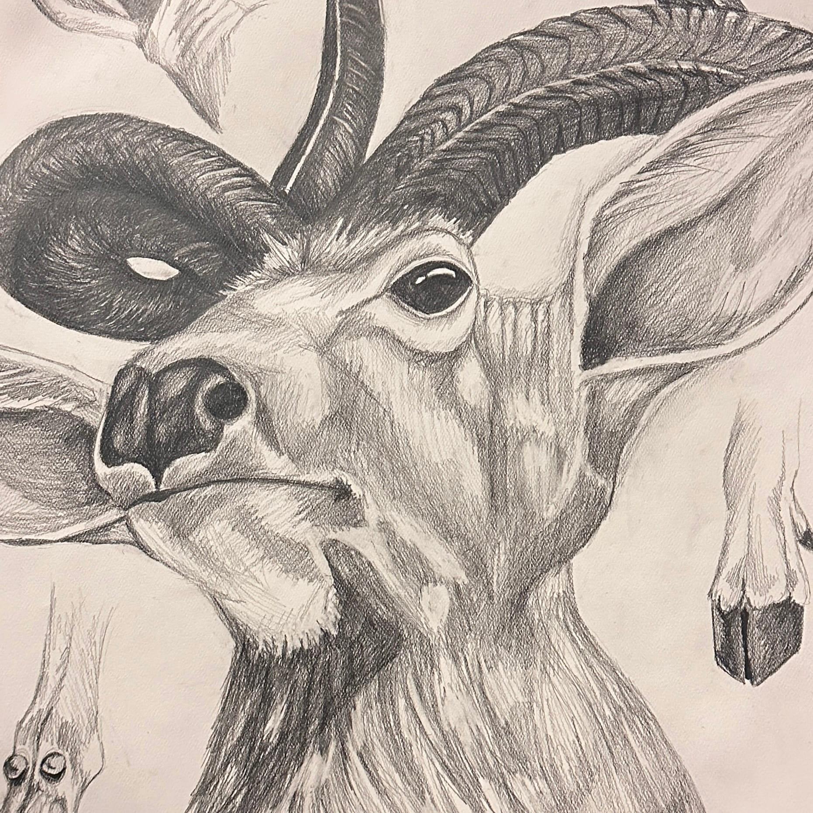
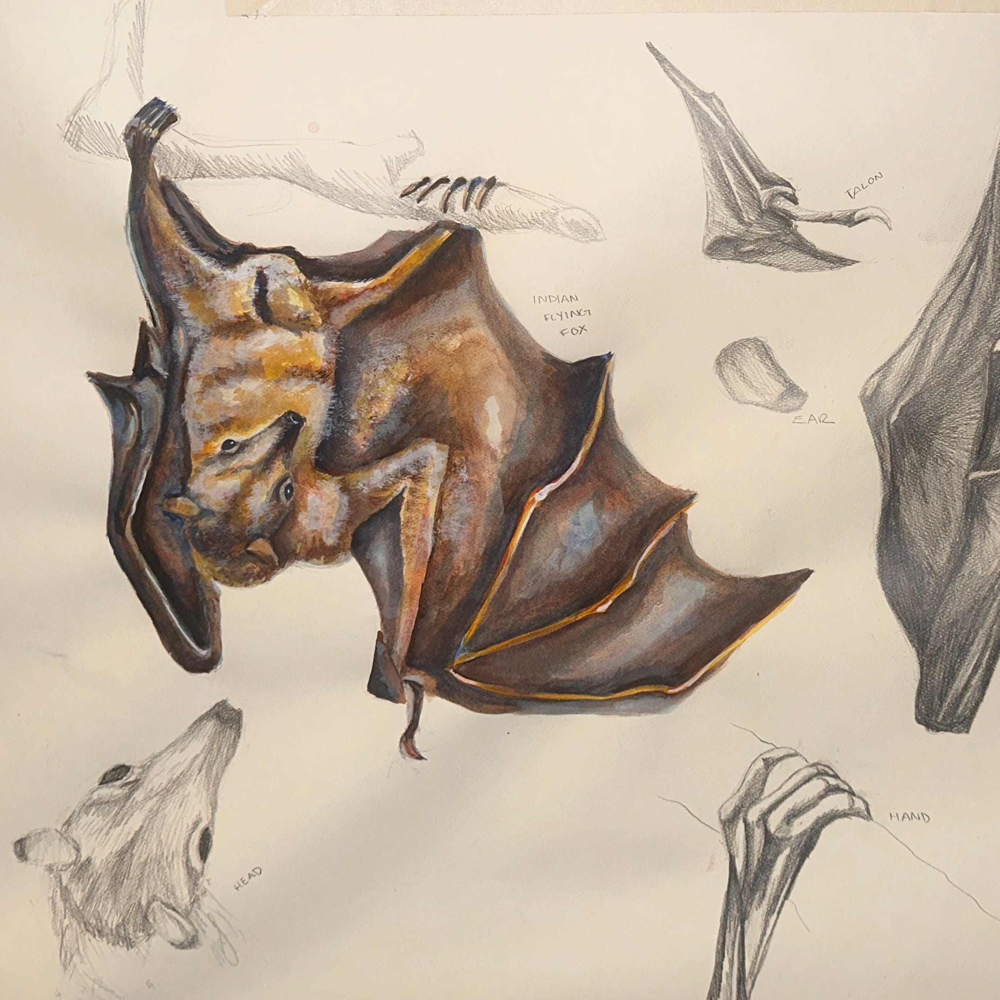
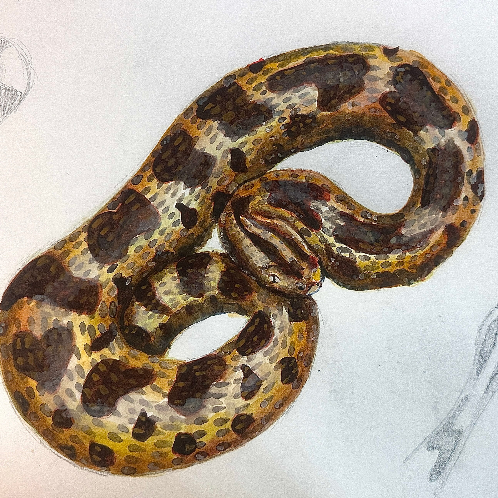
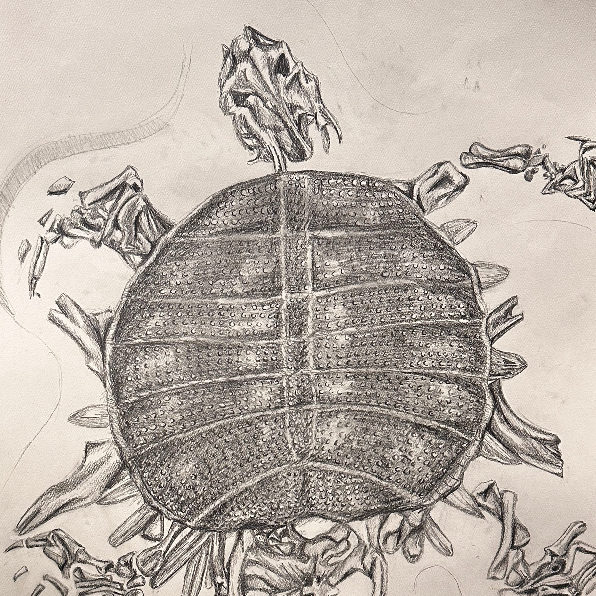
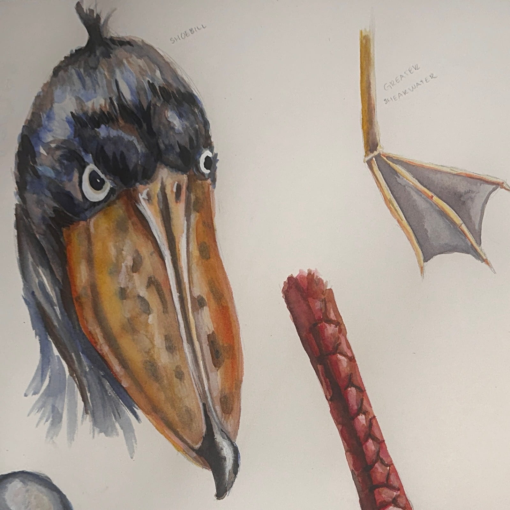
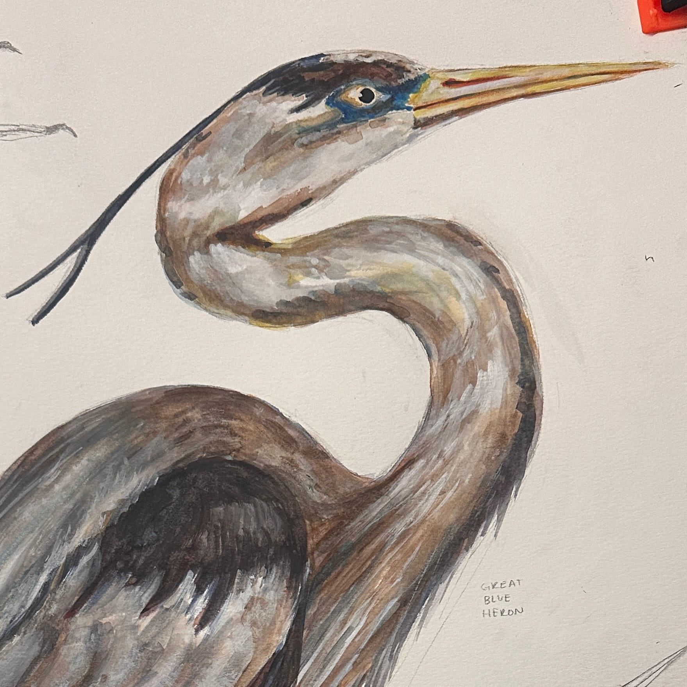
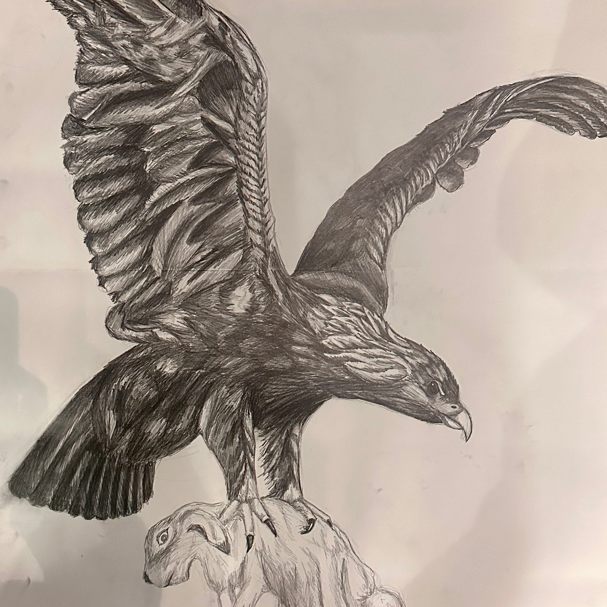

Leaves in Graphite

Flower and Stump Scarred from Mistle Toe in Watercolor

African Elk in GraphiteBaby Anteater in Watercolor

Indian Flying Fox Bat in Watercolor and Graphite

Snake in Watercolor

Sea Turtle Fossilized in Sediment in Graphite

Bird Heads and Feet in Watercolor

Great Blue Heron in Watercolor and Graphite

Eagle Carrying Bunny in Graphite